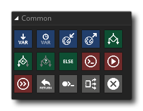

Die allgemeine Aktionsbibliothek enthält, wie der Name schon sagt, die Aktionen, die beim Erstellen Ihrer Projekte am häufigsten verwendet werden. Diese Aktionen werden im Allgemeinen zusammen mit anderen Aktionen verwendet und beziehen sich alle auf das Funktionieren der internen Logik des Spiels. Die verfügbaren Aktionen sind alle unten aufgeführt: